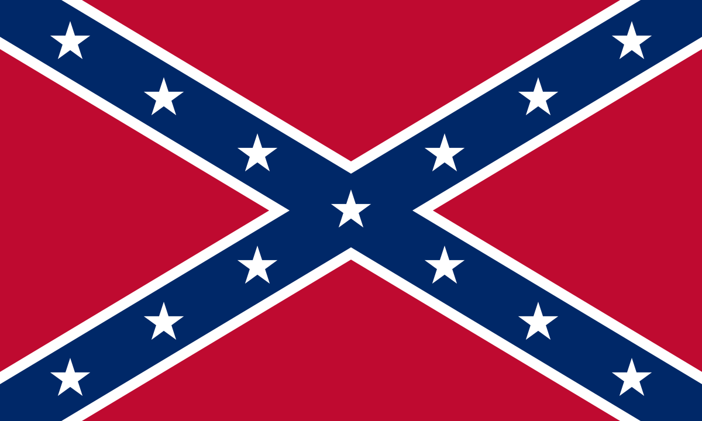

Introduction
Dixieland rises not in rebellion, but in renewal. It remembers what America has forgotten: that a nation is not an idea, but a people. The Tribe of Dixieland is the first to take up the covenant of the Twelve Nations. Its aim is not to dominate, but to restore.
Doctrine of the Dixieland Tribe
Dixieland stands as the first to take up the covenant, not by right of command, but by necessity. Among the Twelve Nations, no people have more clearly seen the futility of a false and monolithic American identity. The South has already suffered what others are only beginning to experience. Its people know what it means to be conquered, humiliated, and stripped of their ancestral ways.
Dixieland recognizes that its culture was not simply neglected, but deliberately weakened. Its ancient customs, faith, and social order were targeted and disfigured by hostile forces. Yet, beneath the imposed ruins, the old spirit endures. The love of land, kin, and God has never fully departed from Dixie, though it has been muted and mocked.
The Dixieland Tribe calls for the restoration of a genuine aristocratic culture. It rejects the false gospel of equality and consumerism which has reduced men to mere economic units. It affirms that hierarchy is not oppression, but order; that nobility is not exploitation, but duty. Dixieland seeks to restore the Christian gentry, the household, and the covenantal bond that ties men to their people, their ancestors, and their God.
Dixieland will provide the Confederacy not with governance, but with strength. It is the largest and most cohesive of the nations. It will offer the most fighting men, the most enduring spirit, and the clearest example of how a nation may remember and restore itself. Dixieland does not claim to rule the Confederacy, but it accepts its role as the first to rise and the first to stand.
The path forward is not to dominate the other nations, but to lead by example in labor, sacrifice, and courage. As others awaken, Dixie will be ready, holding fast to its duty without pride, and without hesitation.
Symbols
Flag of the Dixieland Tribe:
Heraldic Emblem:

Call to Action
We are not building a website. We are restoring a people. If you are of the South by birth, ancestry, or conviction — the work begins with you. Gather. Prepare. Remember.